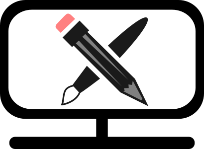

ГОЛОВНА СТОРІНКА

Графічний редактор
Графічний редактор — прикладна програма (або пакет програм), що дозволяє її користувачеві створювати й редагувати зображення на екрані комп'ютера і зберігати їх в графічних форматах файлів, наприклад, JPEG, PNG, GIF, TIFF. Деякі графічні редактори призначені для редагування фотографій, тоді як інші — переважно для створення та редагування малюнків.
Типи графічних редакторів
- Растрові графічні редактори. Найпопулярніші: Adobe Photoshop для операційних систем Microsoft Windows і Mac OS X, GIMP для GNU/Linux і інших POSIX-сумісних. GIMP розповсюджується під ліцензією GNU GPL. Artweaver для операційних систем Microsoft Windows.
- Векторні графічні редактори. Найпопулярніші: Adobe Illustrator, Corel Draw, Macromedia Free Hand — для Windows, Inkscape — для всіх ОС.
- Гібридні графічні редактори. Найпопулярніші: RasterDesk для AutoCAD, Spotlight для операційних систем Microsoft Windows.
- Тривимірні графічні редактори. Найпопулярніші: 3D Studio Max та Maya.
Формати графічних файлів
Формат файлу визначає спосіб кодування збереженої в ньому інформації. Існує велика кількість форматів, що обумовлено різноманітністю сфер їх застосування. Формати графічних файлів визначають спосіб зберігання малюнка (у растровому чи векторному вигляді), а також форму зберігання даних (використовуваний алгоритм стиснення). Стиснення найчастіше застосовується до растрових графічних файлів, які займають досить багато місця на диску.